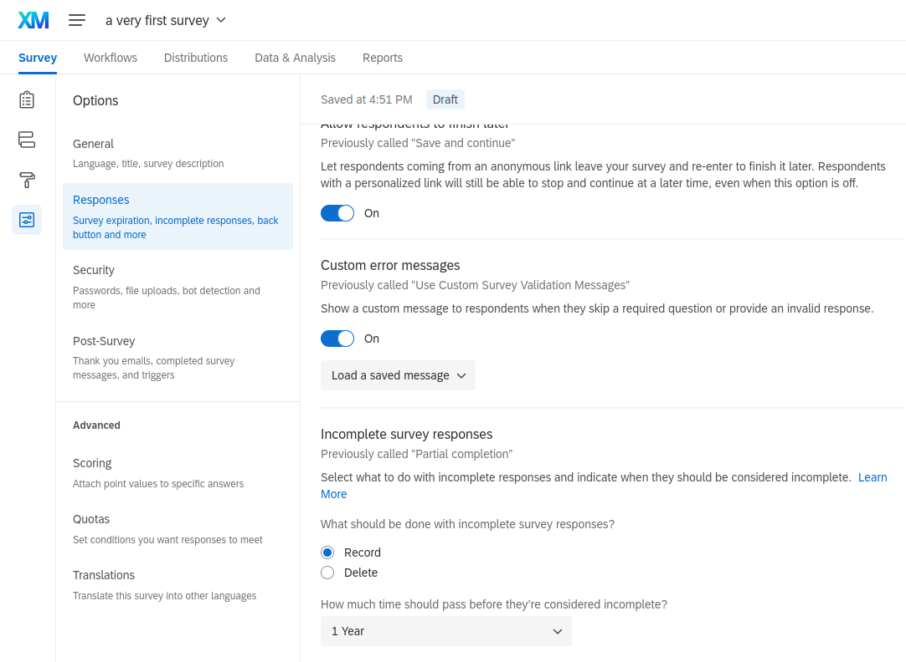

Create a survey
At survey creation setting security parameters is mandatory. Optionnally, the survey editor can modify the survey styling as desired, design paradata collection and embed WPSS data.
Create a survey🔗
Define security parameters🔗
Go to : Project ➡ Survey Options ➡ Security and select Survey Access ➡ By invitation only as shown below:

Select aloso Anonymise responses:

Furthermore, to prevent the the survey platform from transforming incomplete responses into complete responses after a chosen time interval, select a value long enough to suit your needs for the Incomplete survey responses option. This will prevent false response rates if this value had been set as shorter than the fieldwork.

Customize survey style🔗
Select Look and feel : Custom theme: Edit

In the Custom CSS box, you can add a piece of CSS code.

Highlighted in grey below is the custom CSS that is already included in a custom theme, created by the survey platform administrator.
If you observe that a modification doesn’t show, you can add the rule !important to the property to override it from the source theme.
1 2 3 4 5 6 7 8 9 10 11 12 13 14 15 16 17 18 19 20 21 22 23 24 25 26 27 28 29 30 31 32 33 34 35 36 37 | |
Embed data🔗
A controlled sub-set of personal data hosted on WPSS are shared with the survey platform for the purpose of survey routing, filtering, and survey dataset production. The variables are available for survey editors to use. The list of variable is as follows:
countryess_idid(concatenation ofcountryandess_id)sextitle
To include embedded data in the dataset export file, you have to declare embedded data in the Data Flow as shown below:


You do not have to declare embedded data in the data flow in order to use it as survey branching conditions. This operation is needed to include this data in the survey dataset.
Design paradata collection🔗
To collect timestamps paradata, go to Project ➡ Survey Flow and declare an embedded data Field below each survey block as:
${date://CurrentDate/c}